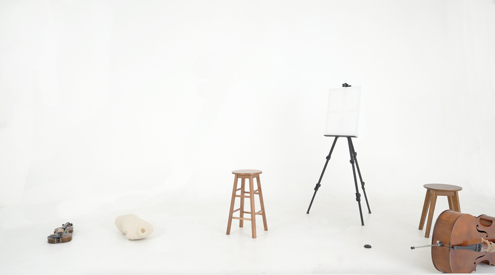
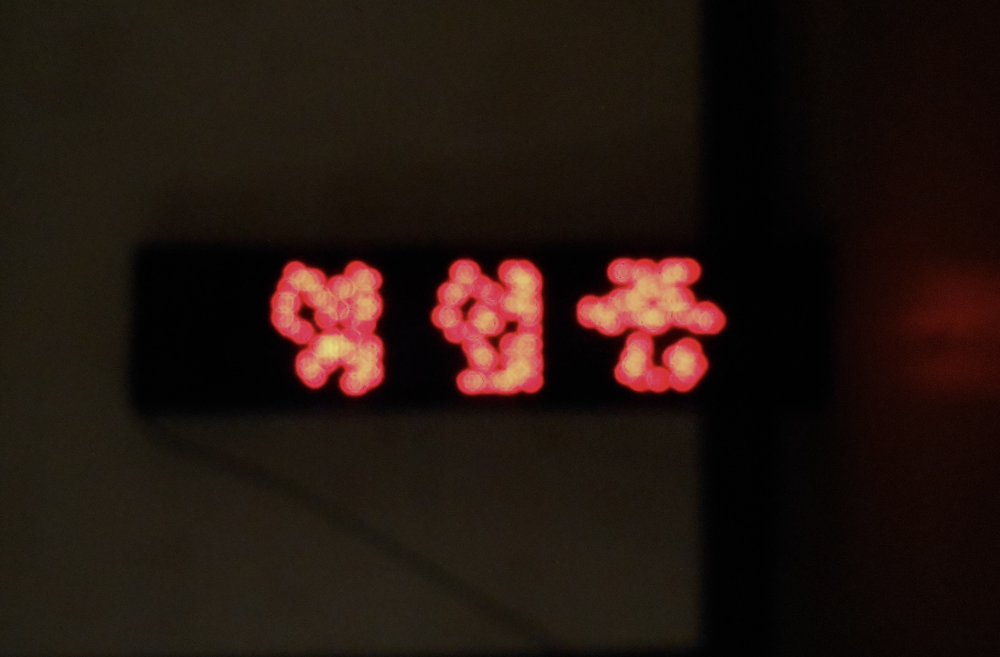
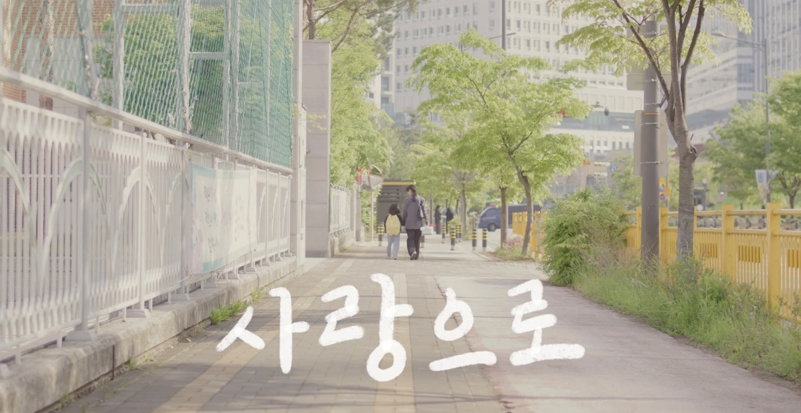
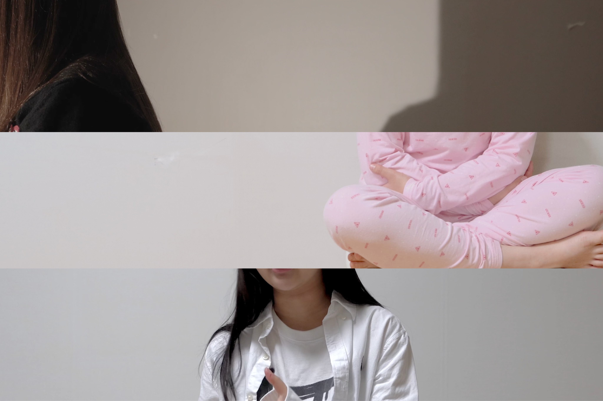
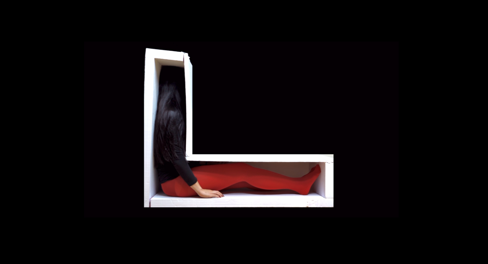
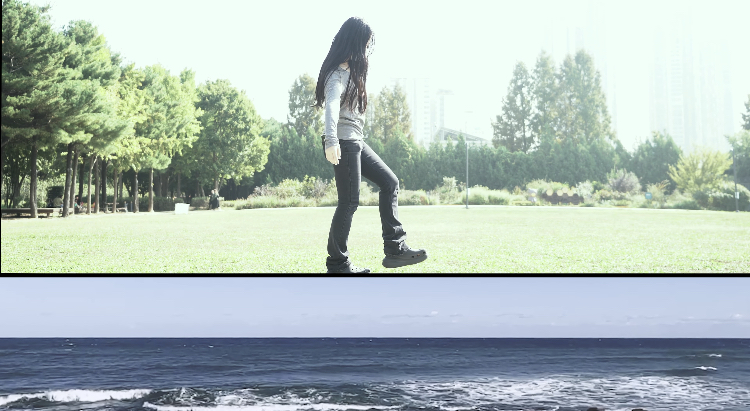
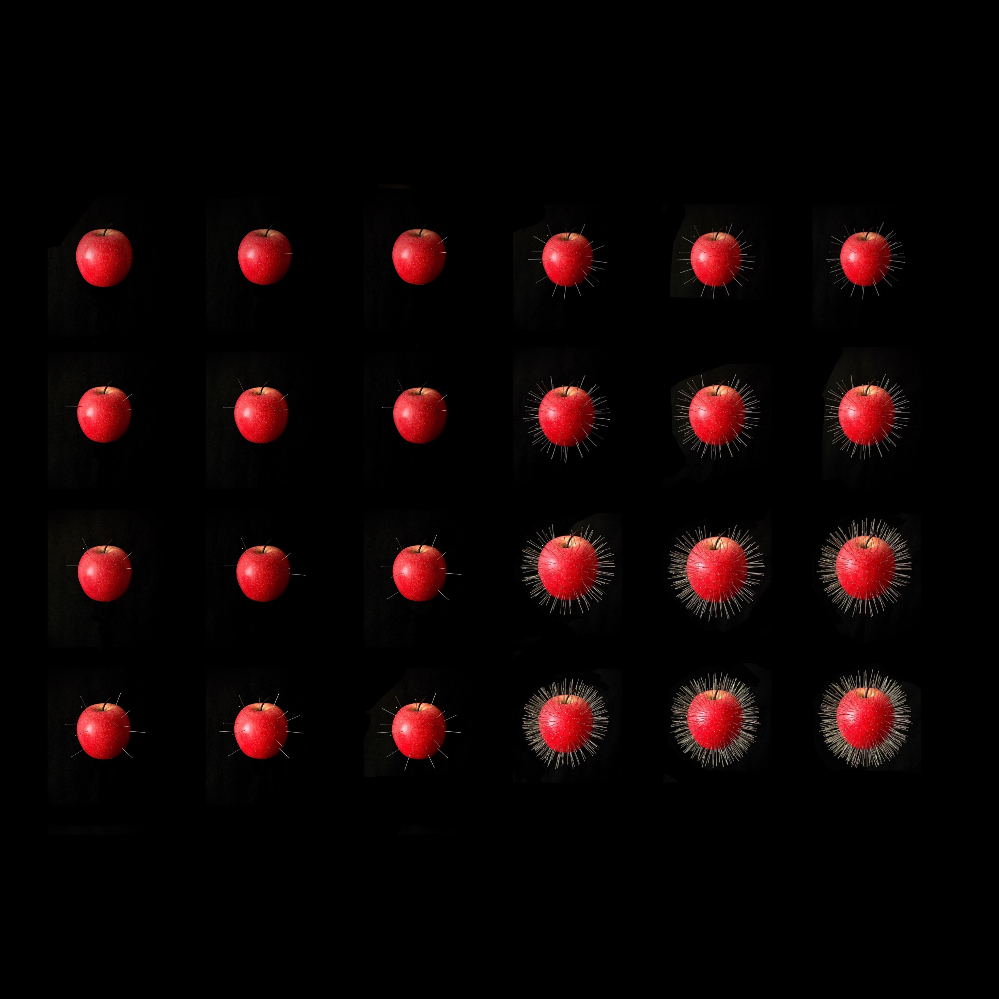

Title
Category
Year
01

시지프스 돼보기 Video 2026
02

88:88-88:88 88:88 라스트오더 Object 2026
03

사랑으로 Project 2025
04

Find the source of my poor heart Video 2024
05
Artist Statement
Note
ing
06

010 Video 2024
07

Effecause Archive1:Void Mechanism Video 2024
08

DiViSiON Video 2024